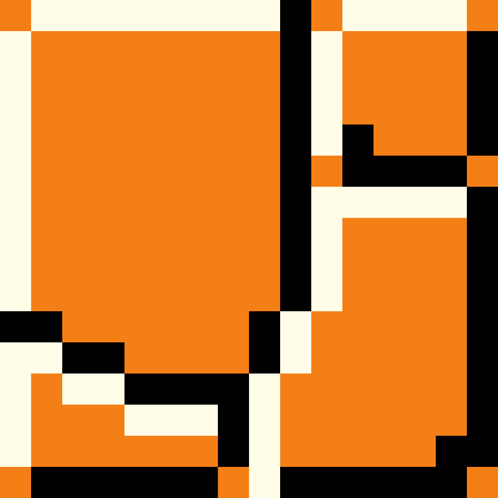
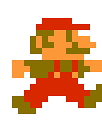
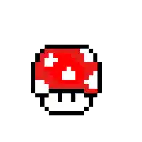
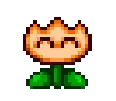

Retro Review: Super Mario Bros
Welcome back to the Memories Corner. When discussing the titans of the 8-bit era, skipping Super Mario Bros. is practically a crime. It is the poster child for the NES, the undisputed blueprint for the side-scrolling platformer, and the title that almost single-handedly revitalized the home console market. But here, we try to separate the overwhelming historical mythology from the actual moment-to-moment gameplay. When you strip away its massive cultural impact and judge the original game purely on how it feels to play today, it lands squarely in the middle of the pack. It’s undeniably important, but it’s far from the untouchable masterpiece that pure nostalgia often paints it to be.
Let’s start with what still holds up. The level design in World 1-1 remains a brilliant, textbook example of teaching the player without a single line of text. You learn how momentum works, how Goombas behave, and how power-ups function entirely through organic interaction. The physics introduce a heavy reliance on momentum; building up speed to clear massive gaps requires a satisfying rhythm and deeply ingrained muscle memory. The Mushroom Kingdom is vibrant, Koji Kondo’s soundtrack is eternally catchy, and the hidden warp zones added a layer of playground rumor and secret-hunting that was genuinely revolutionary for its time.
However, giving it a 3 out of 5 means we have to be honest about the frustrating cracks in that foundation. As you progress into the later worlds—particularly the grueling gauntlet of World 8—the game stops feeling like a joyful platformer and devolves into a rigid exercise in memorization. The collision detection and hitboxes can be surprisingly clunky, leading to cheap deaths where you will swear you cleared a Piranha Plant or a Bowser fire. Furthermore, the inability to scroll the screen backward is a massive limitation. If you miss a crucial jump or accidentally pass a needed power-up, you are entirely out of luck. The slippery momentum that felt liberating in early levels suddenly feels dangerously imprecise when the game demands you land on a single-block platform suspended over a bottomless pit.
Ultimately, the original 8-bit Super Mario Bros. is a brilliant prototype. It laid the vital, necessary groundwork that would eventually give us near-perfect, refined experiences like Super Mario Bros. 3. It absolutely deserves its foundational spot in gaming history, but returning to it today is a decidedly mixed bag. You'll smile brightly for the first few levels, but the unforgiving limitations of its aging engine will likely make you put the controller down long before you ever rescue the Princess.